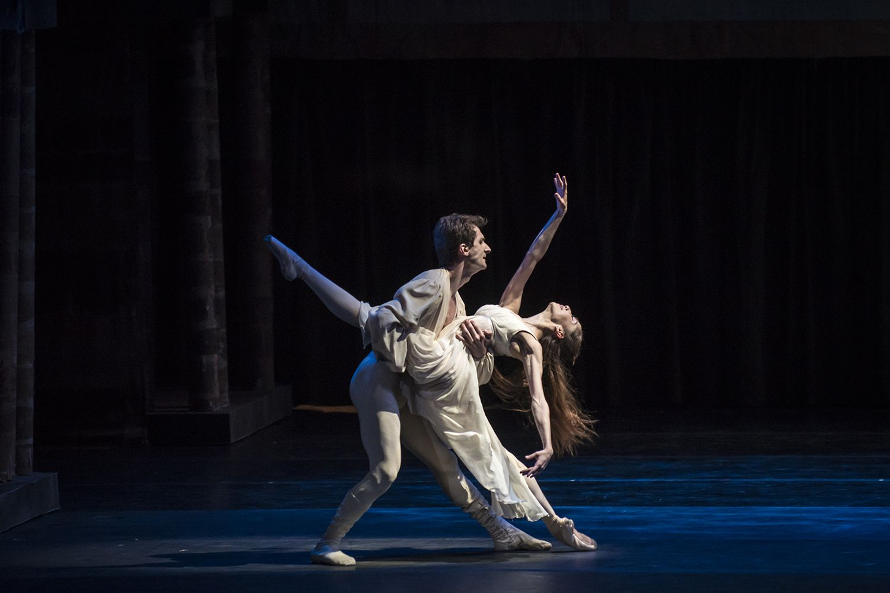
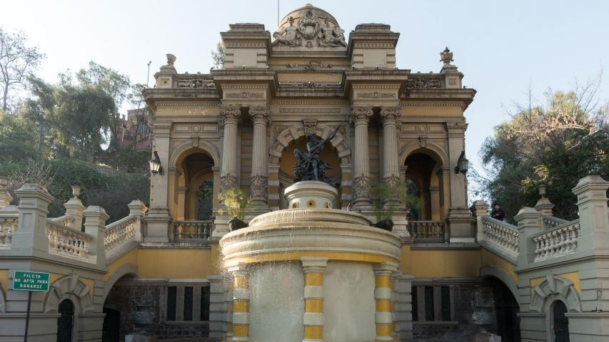
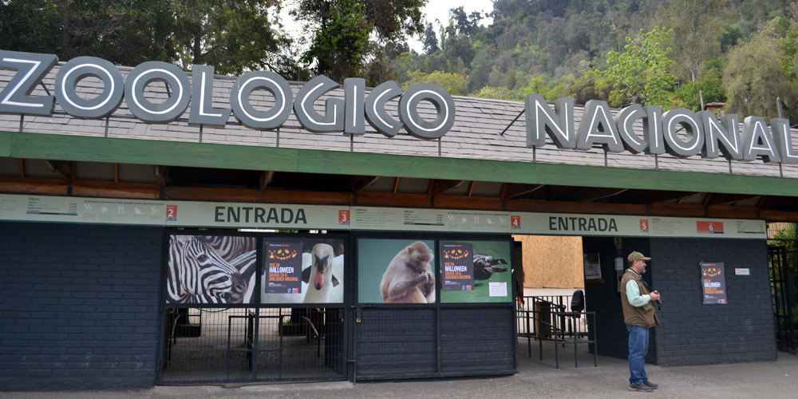
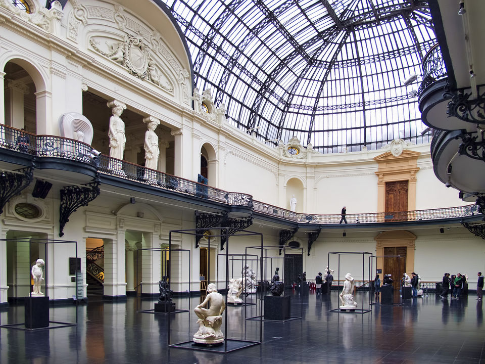
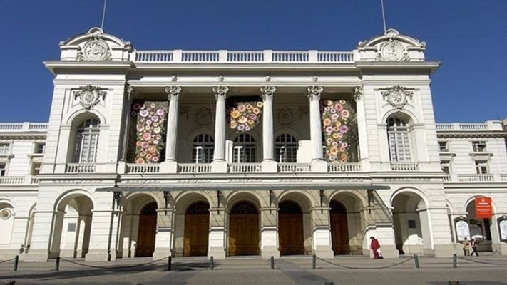
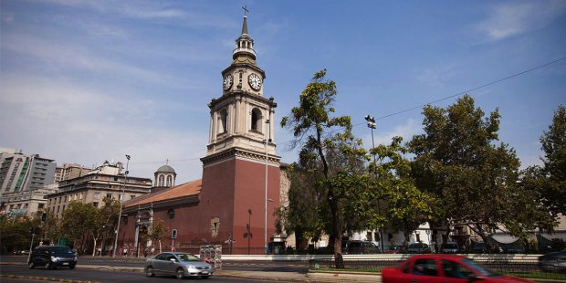

-
Museo bellas artes

20/Diciembre/2022 a 31/Diciembre/2023.
Actividad abierta a todo público de 10:00 a 17:30.
-
Teatro Municipal
19 abril a las 19:00 horas y 20 abril a las 19:00 horas.
Desde $4000.
-
Iglesia de San Francisco

Martes a sábado: 08:00/10:00/12:00/19:30 Domingo: 09:00/10:30/12:00/13:15/19:30.
Abierto a todo público.
-
Cerro Santa Lucía
Martes a domingo de 08:00 a las 20:00 horas.
Actividad abierta a todo público.
-
Zoológico nacional
Martes a Domingo de 10:00 a 18:00 horas.
Menores de 3 años gratis. $2.000 niños/as y $4.000 adultos
Museo bellas artes
Entre el arte y la comunidad, el Museo bellas artes de Martes a Domingo, abre sus puertas para ser recorrido y compartido por todos sus visitantes.
Nuestra misión es: "Generar, desarrollar y comunicar conocimientos, procesos y obras en el ámbito de las artes en el contexto de la realidad sociocultural latinoamericana".
En 1910 fue inaugurado el Palacio de Bellas Artes, construido por el arquitecto chileno-francés Emile Jéquier, fue una de las obras en celebración de los 100 años de independencia de Chile. 100 años después, el barrio recibe el nombre de “Bellas Artes”, tiene su propia estación de metro y un sin número de cafés y restoranes para complementar la visita al Museo y el Parque, integrando por más de 5000 obras, entre pinturas, esculturas, dibujos y grabados.
Nuestra Ubicación
El Museo esta ubicado en José Miguel de la Barra 650
Dias de visita
- José Miguel de la Barra 650, Santiago, Chile.
- Luchas por el arte. Colección MNBA.
- 20/Diciembre/2022 hasta el 31/Diciembre/2023.
- 10:00 - 17:30.
- Sitio Artistas Visuales Chilenos.
- Actividad abierta a todo público.

- José Miguel de la Barra 650, Santiago, Chile.
- Luchas por el arte. Colección MNBA.
- 20/Diciembre/2022 hasta el 31/Diciembre/2023.
- 10:00 - 17:30.
- Sitio Artistas Visuales Chilenos.
- Actividad abierta a todo público.
Teatro Municipal
La construcción, centro de actividades Teatro municipal para la aristocracia santiaguina, asidua a los bailes y las tertulias, tenía un marcado estilo francés y una actividad sumamente relevante para la época.
Nuestra misión es: "Centro de actividad artística, importantes actividades chilena, destacándose principalmente sus funciones de ópera, zarzuela, conciertos sinfónicos y de cámara, teatro y ballet".
Abrió sus puertas el año 1857, en el terreno que originalmente ocupaba la Universidad Real de San Felipe. Desde entonces es el principal centro de actividad artística de la capital, particularmente en el ámbito de la ópera, la música docta y el ballet. Gracias a la iniciativa de algunos particulares, en tiempos de la presidencia de don Manuel Montt, la capital de Chile tuvo un digno centro de actividad artística, a la par con los principales teatros de América.
Nuestra Ubicación
El conversatorio inicial muy ameno y gran forma a conocer el trabajo que desarrollan.
Dias de visita
- Romeo y Julieta.
- Ballet de Santiago.
- Estrella de la Ópera de París: Ludmila Pagliero.
- Desde $4000.
- 19 abril–19:00 horas/Serie B1.
- 20 abril–19:00 horas/Serie B2.
- Romeo y Julieta.
- Ballet de Santiago.
- Estrella de la Ópera de París: Ludmila Pagliero.
- Desde $4000.
- 19 abril–19:00 horas/Serie B1.
- 20 abril–19:00 horas/Serie B2.
Iglesia de San Francisco
Monumento arquitectónico más antiguo existente en Chile, Iglesia de San Francisco levantado entre 1572 y 1618 por la orden franciscana, templo original del cual solo sobreviven los muros iniciales de piedra.
El único ejemplar de: "La primera arquitectura de la ciudad, lo que la posicionan como un referente icónico, histórico y patrimonial de Santiago".
Hoy también es posible de visitar los antiguos claustros que hacían parte del conjunto, transformados actualmente en un museo de arte colonial, donde se exhiben pinturas, textiles, platería, mueblería y esculturas elaboradas en América durante los siglos XVI, XVII y XVIII. Vale destacar entre sus piezas, el invaluable conjunto de lienzos pintados al óleo representando la vida de San Francisco de Asís, todas elaboradas en Cuzco entre los años 1668 y 1684.
Nuestra Ubicación
Ubicado en el costado sur de la Alameda del Libertador General Bernardo O'Higgins, en la ciudad de Santiago, Chile.
Dias de visita
- Avenida Libertador Bernardo O’Higgins #816.
- Patrimonio Nacional.
- Martes a sábado: 08:00, 10:00, 12:00 y 19:30 horas.
- Domingo: 09:00, 10:30, 12:00, 13:15 y 19:30 horas.
- Abierto a todo público.

- Avenida Libertador Bernardo O’Higgins #816.
- Patrimonio Nacional.
- Martes a sábado: 08:00, 10:00, 12:00 y 19:30 horas.
- Domingo: 09:00, 10:30, 12:00, 13:15 y 19:30 horas.
- Abierto a todo público.
Cerro Santa Lucía
El Cerro Santa Lucía es un icono histórico, cultural de la ciudad y es uno de los parques públicos más visitados por turistas nacionales y extranjeros, siendo uno de los íconos más reconocibles de la capital y del país.
Un importante rol: "Como atractivo turístico, siendo uno de los paseos públicos más interesantes de la capital".
Llamado Huelén por los nativos de la zona, fue en sus faldas donde el conquistador Pedro de Valdivia estableció su campamento antes de fundar Santiago de la Nueva Extremadura el 12 de febrero de 1541.
Nuestra Ubicación
Ubicado a pasos del centro cívico de Santiago en, la Región Metropolitana.
Dias de visita
- Avenida Libertador Bernardo O´Higgins 451.
- Espacio Público.
- Monumentos Históricos.
- Martes a domingo de 08:00 a las 20:00 horas.
- Actividad abierta a todo público.
- ATRACTIVOS:
- Terraza Neptuno.
- Terraza Caupolicán.
- Ermita de Benjamín Vicuña Mackenna.
- Castillo Hidalgo.
- Jardín Circular.

- Avenida Libertador Bernardo O´Higgins 451.
- Espacio Público.
- Monumentos Históricos.
- Martes a domingo de 08:00 a las 20:00 horas.
- Actividad abierta a todo público.
- ATRACTIVOS:
- Terraza Neptuno.
- Terraza Caupolicán.
- Ermita de Benjamín Vicuña Mackenna.
- Castillo Hidalgo.
- Jardín Circular.
Zoológico nacional
En nuestro Zoologico nacional realizamos labores de educación de la sociedad, conservación de la biodiversidad, investigación y rehabilitación de fauna silvestre, bajo los más altos estándares de bienestar animal.
Nuestra misión es: "Reconectar a las personas con la naturaleza, a través de experiencias recreativas que las inspiren a respetar, proteger y conservar la biodiversidad".
Estamos avalados por prestigiosas organizaciones internacionales como la Asociación Mundial de Zoológicos y Acuarios (WAZA), Asociación Latinoamericana de Parques Zoológicos y Acuarios (ALPZA), la Asociación Internacional de Educadores de Zoológico (IZE), y el Sistema Internacional de Información de Especies (Species360). El bienestar animal es prioridad en el Zoológico Nacional, por lo que se trabaja bajo los más altos estándares y con base en evidencia científica, de manera de que los animales nuestro cuidado prosperen y tengan una buena calidad de vida. Para ello, se promueve el bienestar de los animales mediante el Modelo de los Cinco Dominios del Bienestar Animal (Nutrición, Salud, Alojamiento o Entorno, Conducta, y Bienestar Mental).
Nuestra Ubicación
Ubicado en Baquedano L1 Martes a Domingo de 10:00 a 18:00.
Dias de visita
- Pío Nono 450, Recoleta, Región Metropolitana
- Martes a Domingo de 10:00 a 18:00
- Profesionales calificados
- Personas con discapacidad, mayores, menores de 3 años gratis
- $2.000 niños/as y $4.000 adultos.
- Pío Nono 450, Recoleta, Región Metropolitana
- Martes a Domingo de 10:00 a 18:00
- Profesionales calificados
- Personas con discapacidad, mayores, menores de 3 años gratis
- $2.000 niños/as y $4.000 adultos.